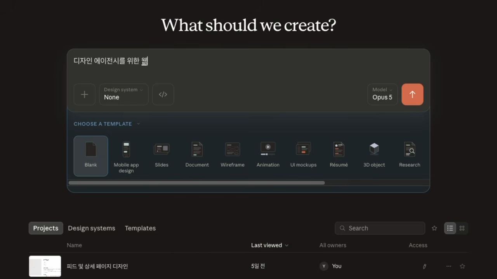
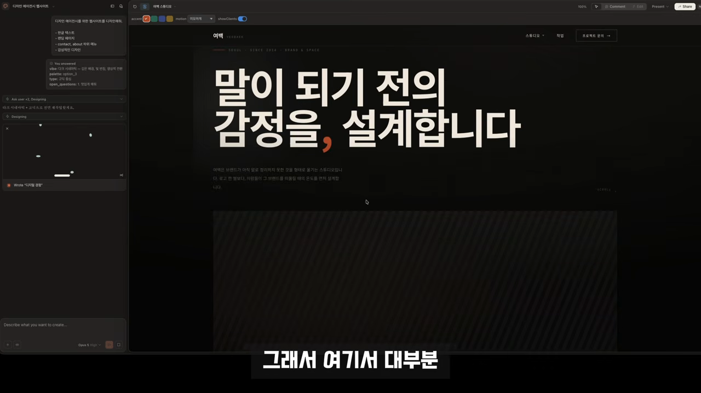
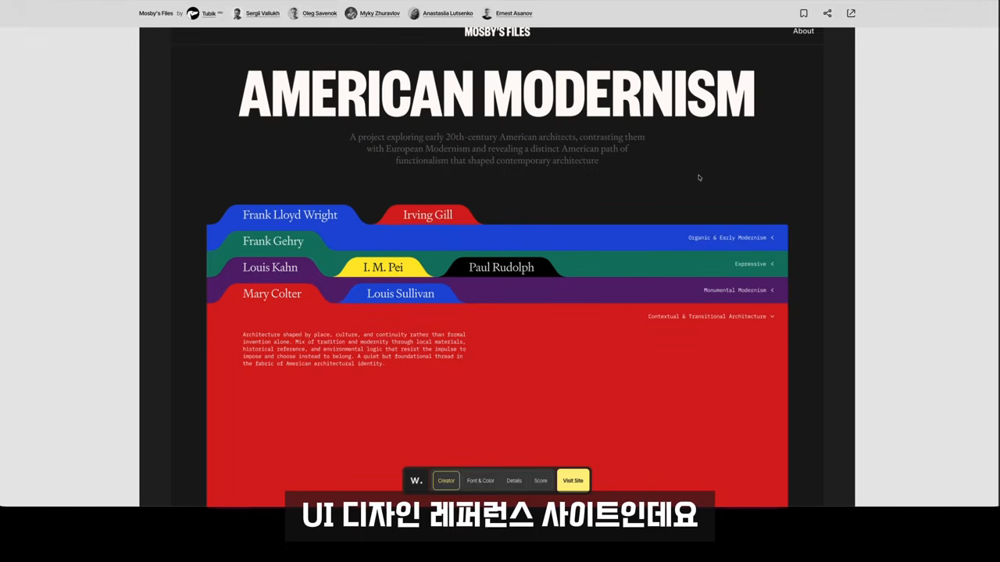
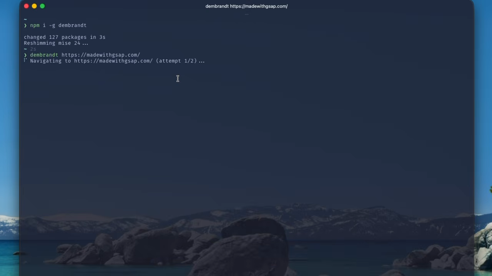
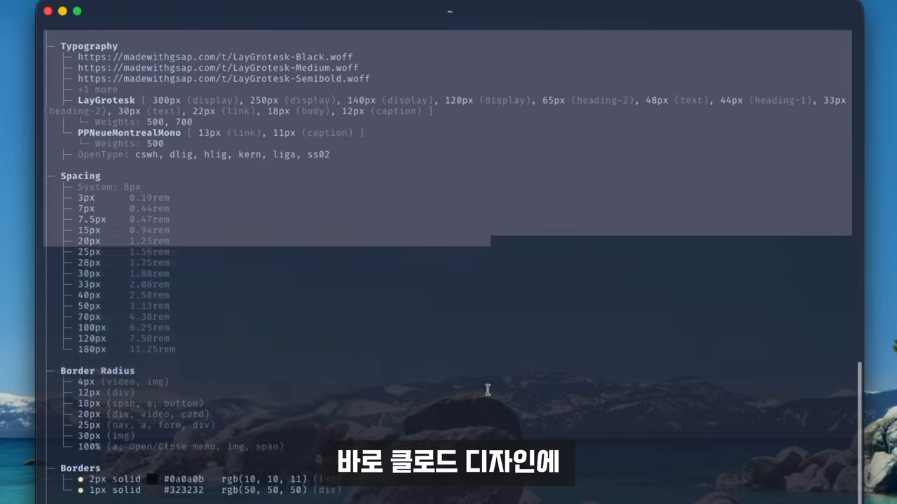
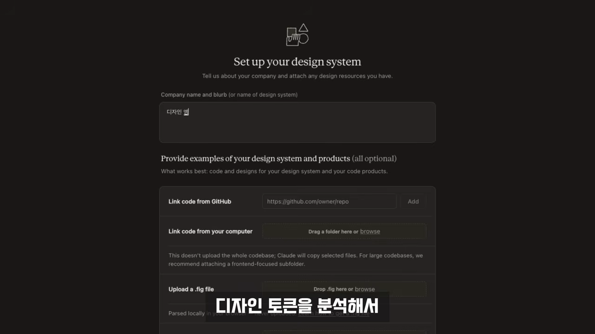
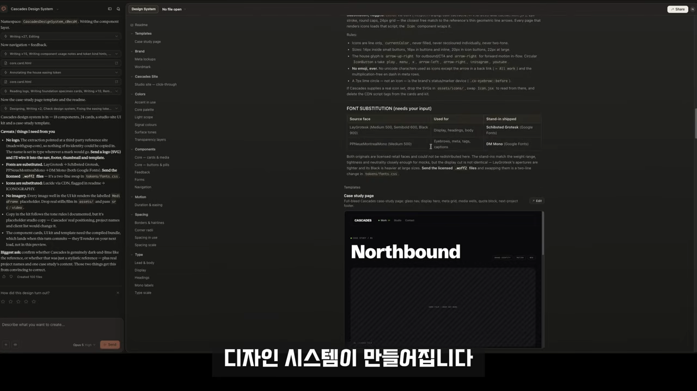
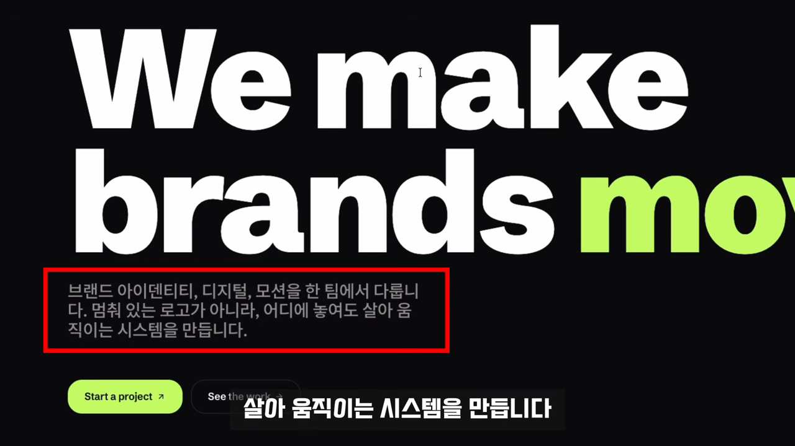
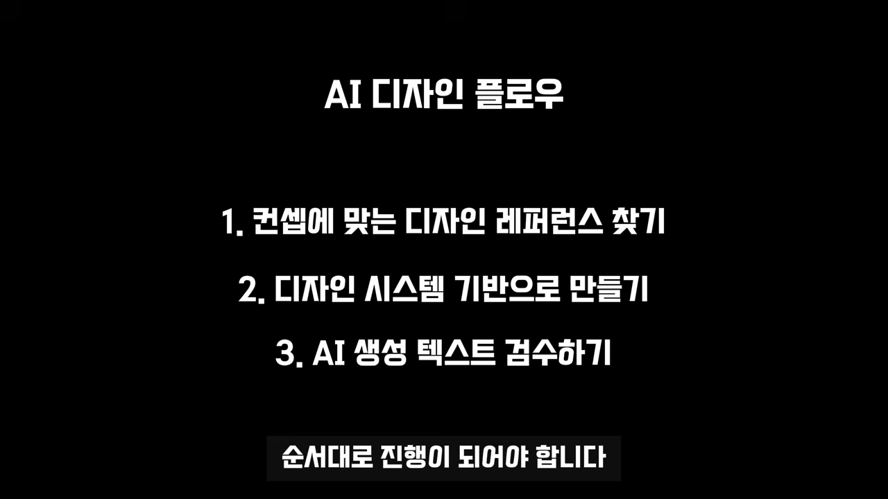

프롬프트부터 넣으면 생기는 일
같은 AI, 비슷한 프롬프트, 같은 디자인 툴을 써도 결과물의 느낌은 크게 달라요. 어떤 건 AI가 만든 티가 나고, 어떤 건 디자이너가 직접 만든 브랜드처럼 보여요. 발표자는 잘 만든 AI 디자인을 뜯어보다가 세 가지 공통점을 찾았고, 그 세 가지에는 순서가 있다고 말해요.
흔한 출발점
보통은 Claude Design을 켜고 바로 프롬프트를 넣어요. 영상에서는 '디자인 에이전시를 위한 웹사이트를 디자인해 줘. 감성적인 디자인으로.'라고 입력하고 몇 가지 선택지를 골라요.

결과는 크게 나쁘지 않아요. 폰트도 크고 여백도 있고 버튼도 멀쩡해요. 문제는 어딘가 AI가 만든 느낌이 난다는 거예요.

여기서 대부분은 프롬프트를 더 고쳐요. '좀 더 고급스럽게', '더 미니멀하게', '애플처럼'. 발표자도 이렇게 많이 해 봤지만 결과가 조금 달라질 뿐 바탕의 느낌은 그대로였다고 해요. 그래서 순서 자체를 바꿔 보기로 했어요.
1단계: 내 서비스에 맞는 레퍼런스 고르기
Claude Design을 켜기 전에 레퍼런스부터 찾아요. 실제로 만들려는 것과 비슷한 디자인이 있는지 먼저 둘러보는 거예요. 발표자는 대표적인 웹 UI 레퍼런스 사이트로 Awwwards를 들어요.

멋있는 것보다 맞는 것
여기서 핵심은 무조건 멋있는 걸 고르는 과정이 아니라는 점이에요. 기업용 AI SaaS를 만든다고 해 볼게요. 아주 화려한 사이트를 고르면 보기엔 멋있어도, 그 서비스가 필요로 하는 톤에는 맞지 않을 수 있어요.
잘못된 레퍼런스를 고르면 뒤에서 아무리 정교하게 작업을 해도 잘못된 방향으로 정교해집니다.
— 영상 02:16
그래서 고를 때 기준은 질문 하나예요. '이 디자인이 내가 만들 서비스와 잘 맞을까?'
2단계: 디자인 토큰을 뽑아 디자인 시스템으로
발표자는 고른 레퍼런스를 이미지로 캡처해서 Claude Design에 넘기지 않아요. 영상에서 '진짜 핵심'이라고 부르는 단계예요.
잘 만든 디자인에는 폰트 크기, 색, 간격, 버튼 스타일처럼 반복되는 규칙이 있어요. 이런 값을 디자인 토큰이라고 불러요. 발표자는 이걸 하나씩 눈으로 찾는 대신 Dembrandt라는 도구로 뽑아요.
Dembrandt로 토큰 뽑기
터미널에서 웹사이트에 나온 설치 명령어를 그대로 붙여 넣고, 이어서 레퍼런스 사이트 URL을 넣어 실행해요. 데모에서 쓴 레퍼런스는 Made With GSAP 사이트예요.
npm i -g dembrandt
dembrandt https://madewithgsap.com/
실행이 끝나면 그 사이트에 실제로 쓰인 값이 정리돼 나와요.

| 출력 항목 | 화면에 보이는 내용 |
|---|---|
| Typography | 폰트 파일 경로, 서체별 크기(디스플레이·헤딩·본문) |
| Spacing | 사이트에서 반복해 쓰인 간격 값 목록 |
| Border Radius | 모서리를 둥글게 깎은 정도 |
| Borders | 테두리 두께와 색 |
토큰을 디자인 시스템으로 바꾸기
뽑은 토큰을 바로 붙여 넣지 않아요. 디자인 시스템부터 만들어요. Claude Design의 디자인 시스템 설정 화면에서 '이 레퍼런스에서 추출된 디자인 토큰을 분석해서 디자인 시스템으로 만들어 줘'라고 요청해요.


이렇게 하면 한 번 쓰고 끝나는 화면이 아니라 다시 쓸 수 있는 디자인 시스템이 생겨요. 이후에는 '좀 더 세련되게', '여백을 더 주세요'라고 매번 설명하지 않아요. 이 시스템을 기준으로 화면을 만들어요. 그래서 폰트, 간격, 색, 컴포넌트의 일관성이 훨씬 높아져요.
발표자가 거듭 강조하는 건 토큰 추출 자체가 목적이 아니라는 점이에요.
AI가 새로 결정해야 될 디자인 선택지들을 줄이는 것. 그게 바로 정확도를 높이는 핵심입니다.
— 영상 03:54
3단계: AI 티 나는 한글 문장 다듬기
여기까지 하면 화면의 AI 느낌은 많이 사라져요. 그런데 디자인만 보면 괜찮은데 글을 읽으면 AI 냄새가 확 날 때가 있어요.

예시로 든 문장은 '브랜드 아이덴티티, 디지털, 모션을 한 팀에서 다룹니다. 멈춰 있는 로고가 아니라, 어디에 놓여도 살아 움직이는 시스템을 만듭니다.'예요. 문법은 맞아요. 다만 'A가 아니라 B' 같은 틀은 AI가 쓴 글에 정말 자주 나와서, 읽는 사람은 곧바로 어색함을 느껴요.
디자인은 두고 글만 고치기
방법은 단순해요. 디자인을 그대로 둔 채 AI가 한글만 다시 읽을 수 있게 내보내요. 발표자는 이 검수를 GPT로 했어요. GPT가 낸 수정안을 받아 다시 Claude Design에 반영해 달라고 요청하면, 화면이 훨씬 실제 서비스처럼 보여요.
세 단계는 왜 순서대로 해야 할까요?
세 단계는 따로 노는 팁이 아니라 순서대로 이어진 흐름이에요. 하나를 건너뛰면 무엇이 무너지는지 정리하면 이래요.

| 단계 | 하는 일 | 건너뛰면 |
|---|---|---|
| 1. 레퍼런스 찾기 | 내 서비스 톤에 맞는 사이트 고르기 | 방향 자체가 틀려요 |
| 2. 디자인 시스템 기반으로 만들기 | 토큰을 뽑아 시스템으로 만들고 그 기준으로 생성 | 만들 때마다 결과가 흔들려요 |
| 3. 한글 검수 | 디자인은 두고 문구만 다른 AI로 다듬기 | 마지막 문장에서 AI 티가 나요 |
처음 화면과 비교
왼쪽은 Claude Design에 프롬프트만 넣은 결과, 오른쪽은 세 단계를 거친 결과예요.
오른쪽을 만들면서 대단한 프롬프트나 기술을 쓴 건 아니에요. 오히려 AI가 결정해야 할 것을 줄여 줬어요. 좋은 디자인이 이미 가진 기준을 AI가 쓸 수 있게 만드는 것, 발표자는 이게 AI 디자인에서 훨씬 중요한 점이라고 봐요.